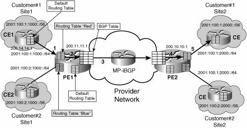
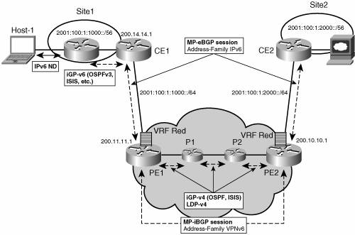
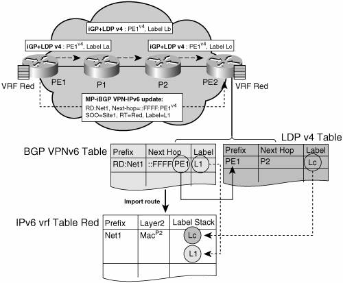
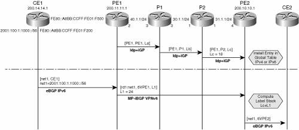
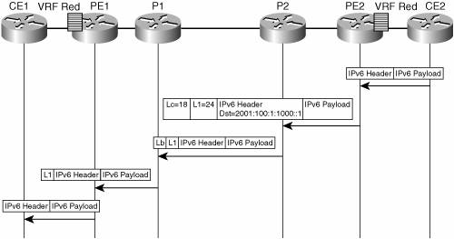
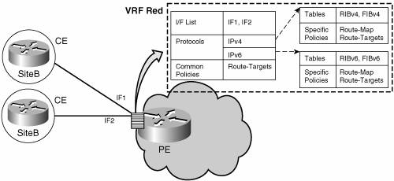

BGP-MPLS IPv6 VPNs: A PE-Based VPN SolutionBGP-MPLS VPNs are specified in the Internet Draft draft-ietf-l3vpn-rfc2547bis, by E. Rosen and Y. Rekhter. This solution represents an implementation of the PE-based VPN model. Because this type of VPN technology has become by far the most popular technology for deploying VPN in a peer-to-peer model, the remainder of the chapter focuses on its application to IPv6. The following terminology is used for the remainder of this chapter:
In principle, no difference exists between IPv4 VPNs, as described in "BGP-MPLS IP VPNs," and IPv6 VPNs, as specified in "BGP-MPLS IP VPN Extension for IPv6 VPN" (Internet Draft, draft-ietf-l3vpn-bgp-ipv6). Similar to IPv4, MP-BGP is the centerpiece of the MPLS VPNv6 architecture. It is used to distribute IPv6 routes over the SP backbone, with the same set of mechanisms to deal with overlapping addresses, redistribution policies, and scalability issues. Even though we do not expect overlapping address space in IPv6, addresses are still prepended with an RD. A new Network Layer Reachability Information (NLRI) 3-tuple format <length, IPv6-prefix, label> is defined to distribute these routes using MP-BGP. The extended community attribute (Route-Target) is used to control redistribution of routing information, by tagging exported routes and filtering imported ones. For scalability, you can use route reflectors to concentrate routing paths, and avoid a full PE mesh. Similar to IPv4, BGP features such as route refresh, automatic route filtering, and outbound route filtering help reduce the number of routes held in each PE. The Internet Draft "BGP-MPLS IP VPN Extension for IPv6 VPN" focuses solely on the following differences between IPv4 and IPv6:
A VPNv6 address is a 16-byte IPv6 address, prepended with an 8-byte RD, to form a 24-byte address. As in VPN IPv4, the VPNv6 prefix (network portion of the address) is only meaningful within MP-BGP, and only the IPv6 part of this prefix is kept when redistributed into IPv6 routing protocols. Example 7-1 shows the VPNv6 prefix 2001:100::/64. Example 7-1. Showing BGP VPNv6 Address
Note The notation RD:IPv4-prefix, used for VPNv4 prefixes, cannot be used for VPNv6 prefixes because it conflicts with the IPv6 prefix notation. For instance, 100:1:2001::/64 could be interpreted as an IPv6 prefix or a VPNv6 prefix with an RD of 100:1. For that reason, VPNv6 prefixes use the notation [RD]IPv6-prefix. In the latter part of "BGP-MPLS IP VPN Extension for IPv6 VPN" (draft-ietf-l3vpn-bgp-ipv6), transitioning and coexistence aspects are covered, with emphasis on the 6PE approach applied to VPNv6. The main aspects of this approach have been discussed at length in Chapter 3 (in the "IPv6 over 6PE" section), and the implications and mechanisms are the same here. Other aspects of coexistence, in particular interprovider and Carrier Supporting Carrier (CSC) topologies, are specific to BGP-MPLS IPv6 VPN. For instance, the link between Autonomous System Boundary Routers (ASBRs) might support IPv4 only, IPv6 only, or both, independently of the address family being transported. This creates a new set of variations in the list of cases listed in "BGP/MPLS IP VPNs" (draft-ietf-l3vpn-rfc2547bis) section 10 (Multi-AS backbone). The "Topology Examples" section of this chapter provides examples of both interprovider topology and Internet access topology. Routing Table SegregationThe SP network provides connectivity between "same-customer" sites, while isolating customers from each other. The keystone of the PE-based VPN model is the isolation between routing tables, achieved at two levels:
To achieve routing segregation, a routing tunnel must be established between PE routers to exchange customer routes. This routing tunnel is transparent to the core routers. This is achieved using MP-BGP between the PE routers. In addition, a forwarding tunnel must be available throughout the provider core network, so that datagrams can be forwarded by P-routers, without requiring the P-routers to keep routing tables for each VPN. In theory, the tunneling mechanism chosen for traffic forwarding could be any of the following kinds: GRE, IPsec, L2TP, MPLS, and so forth. In practice, MPLS has been used for the most part in deployment so far. L2TP has been specified for P-networks that do not use MPLS, and it is deployed in few environments. Figure 7-1 illustrates how routing segregation is achieved. Figure 7-1. Routing Tables in BGP-MPLS IPv6 VPN ModelIn Figure 7-1, the following routing tables are being used at PE1:
A BGP session is established between edge routers, and entries from the BGP table are carried over that session. The following steps, illustrated in Figure 7-1, allow route distribution between sites:
Routing Protocols for BGP-MPLS IPv6 VPNFor those unfamiliar with MPLS-VPN, a good book to start with is MPLS and VPN Architectures by Ivan Pepelnjak and Jim Guichard. That book provides enough background to appreciate fully the following two sections. The transition to IPv6 is expected to lead to a long period of coexistence between IPv4 and IPv6. An attractive method for deploying MPLS-VPN IPv6 takes advantage of this coexistence by leveraging an existent MPLS IPv4 core network. This approach, referred to as 6VPE, is similar to the one described in Chapter 3 in the section "IPv6 over 6PE." Figure 7-2 lists the most important aspects of the 6VPE architecture. Figure 7-2. Simple 6VPE ArchitectureThe CE routers are connected to the provider's backbone via PE routers. The PE routers are connected via P-routers. P-routers are unaware of VPN routes, and in the 6VPE case may support only IPv4. Only PE routers perform VPN-specific tasks. For 6VPE, the PE routers are dual-stack (IPv4 and IPv6) routers. The routing component of the VPN operation is divided into core routing and edge routing. The core routing, which involves PE routers and P-routers is typically performed by an IPv4 IGP such as OSPFv2 or IS-IS. In the simple topology illustrated in Figure 7-2, the IGP distributes only routes internal to the provider's AS. The core routing enables connectivity among P- and PE routers. Edge routing takes place in two directions: routing between PE pairs and routing between a PE and a CE. The former is achieved via Multiprotocol Internal Border Gateway Protocol (MP-iBGP) using a specific address family (VPNv6). It distributes routes learned from CEs via the PE-CE routing, using appropriate route export policies at the ingress PE router and appropriate route import policies at the egress PE router. Routing between the CE and its PE is achieved using a routing protocol that is VRF aware. On Cisco routers, at the time of this writing, only static routes, and eBGP, are VRF aware. In the example shown in Figure 7-2, eBGP is used between the CE (CE1) and the PE (PE1). At the same time, the CE runs an IPv6 IGPfor instance, OSPFv3 or IS-IS for IPv6within the VPN site (site1). The CE redistributes IGP routes into MP-eBGP address family IPv6. At the PE, these routes are installed in the VRF red, and forwarded to remote PEs (PE2), according to export policies defined for this VRF. BGP Next HopWhen announcing a prefix (using the MP_REACH_NLRI attribute), MP-BGP running on one PE inserts a BGP next hop in the update message sent to a remote PE. This next hop is either propagated from the received update (for instance, if the PE is a route reflector), or it is the address of the PE sending the update message (egress PE). For the VPNv6 address family, it has to be a VPNv6 address, regardless of the nature of the network between the PE speakers. Because the RD has no significance (the address is not part of any VPN), it is just set to zero. If the provider network is a native IPv6 network, the remaining part of the next hop is the IPv6 address of the egress PE. Otherwise, it is an IPv4 address, masqueraded into an IPv6-mapped address (::FFFF:IPv4-address). Example 7-5 illustrates the case of a 6VPE next hop. Example 7-5. VPNv6 Configuration Example Using IPv4 Next Hop
By default, the next hop advertised will be the VPNv6 address: [0:0]::FFFF:200.11.11.1 Note that it is a 192-bit address in the following form: [RD]::FFFF:IPv4-address. In this particular case, only 32 bits are significant out of 192 bits sent on the wire. Example 7-6 shows that BGP configuration can be used when peering takes place over a native IPv6 network. Example 7-6. VPNv6 Configuration Example Using an IPv6 Next Hop
By default, the next hop advertised is the VPNv6 address: [0:0]2001:100:1:1000:0:0:0:72b Note that it is a 192-bit address in the following form: [RD]IPv6-address. Even though current Cisco routers do not provide support for LDPv6, the preceding example can still be deployed, in the interprovider VPN case, when the two providers exchange VPNv6 routes over an IPv6 link using MP-eBGP. See the section "Interprovider VPNs" later in the chapter for details. When the BGP VPNv6 peers share a common subnet, the MP_REACH_NLRI attribute contains a link-local address next hop, in addition to the global-address next hop. This will typically happen in inter-AS topology, scenario B (see the section "Interprovider VPNs" in the topology examples later in this chapter), when AS boundary routers are facing each other. In that case, the link-local next hop is used locally, and the global next hop is eventually re-advertised by BGP. Building the Label StackFigure 7-3 shows how the label stack is computed by combining information obtained from routing and label distribution protocols. Figure 7-3. Building the Label Stack for 6VPEThe idea is that ingress PE router (PE2) obtains two separate labels, and combines them into a label stack, which it can impose when forwarding traffic to a given VPN IPv6 destination. Each of these labels is learned via a specific mechanism, and has a specific role in the LSP. The outer label (Lc in Figure 7-3) is used to label switch packets from the ingress PE (PE2) to the egress PE (PE1). This label is obtained through a label distribution protocol, such as Label Distribution Protocol (LDP) or ReSerVation Protocol (RSVP). The inner label (L1 in Figure 7-3) is used to reach the appropriate CE router (CE1) from the egress PE (PE1). MP-iBGP distributes this label. The BGP "next hop" (described in the previous section) is the keystone for building the label stack, because it is used to tie the inner and the outer label together at the ingress PE. A recursion is performed to combine the two labels: the prefix (net1) is reachable via PE1, using label L1, and PE1 itself is reachable via P2, using label Lc. This recursion takes place as soon as labels are available, and the resulting label stack (Lc+L1) is stored in the Forwarding Information Base (FIB). In the case of 6VPE (IPv6 MPLS VPN over an IPv4 core), a cross-table resolution (IPv6, then IPv4) is performed to build the label stack, just like for 6PE. The outer label and inner label are sometimes referred to as "BGP next hop" label and VPN label, respectively. Note There is no mechanism to force MP-iBGP to follow the same labeled switching path as IPv6 traffic. In fact, for scalability reasons, the MP-iBGP control traffic is moved away from the Label Switching Path and directed to concentrators such as route reflectors (see the "Scaling IPv6 VPN" section later in the chapter). MP-iBGP control traffic can take advantage of the labeled paths but does not need to. On the other hand, IPv6 traffic between VPN sites requires labeled paths to traverse P-routers (because these are unaware of IPv6 addresses). This is a fundamental difference from other tunneling techniques, in which the routing updates are sent inside the forwarding tunnel. Should the tunnel break, these updates stop, and edge routers remove corresponding entries from their routing table. With VPNv6 (and VPNv4), the labeled path may be broken, while the path between PEs is still usable. The MP-iBGP session will keep exchanging IPv6 routes even though packets for corresponding destinations will not be able to traverse the core network. The result is that the traffic is black holed. Forwarding in BGP-MPLS IPv6 VPNUpon receiving IPv6 traffic from one customer site, the ingress PE router (PE2) will MPLS tunnel IPv6 VPN packets over the backbone toward the egress PE router (PE1) identified as the BGP next hop. Figure 7-4 shows the forwarding tables (IPv6 and MPLS) built as the result of the label distribution across P- and PE routers. Figure 7-4. MPLS Forwarding TablesIn Figure 7-4, the network net1 (2001:100:1:1000::/56) is announced by iBGP from PE1 to PE2, with label L1=24. At the same time, LDP is announcing PE1 reachability to PE2 with label Lc=18. The complete label stack (18, 24) for reaching net1 is shown in Example 7-7, via the show ipv6 cef vrf red command. The label forwarding table at routers P2, P1, and PE1 is shown in Example 7-7 via the show mpls forwarding command. Example 7-7. Showing MPLS Labels Along the LSP
Figure 7-5 shows the MPLS encapsulation taking place at the ingress PE, and the label swapping occurring at P-routers. Figure 7-5. MPLS VPNv6 Forwarding OperationIn Figure 7-5, an IPv6 packet for 2001:100:1:1000::1 is being encapsulated at PE2 and sent to PE1, via P2 and P1. MPLS packet traces are enabled (using the debug mpls packet command) at P2, P1, and PE1, and you can see the label stack being received and transmitted at each router. Under normal operation, a P-router along the forwarding path does not look inside the frame beyond the first label. It either swaps the incoming label with an outgoing one, or removes it (for instance, P1 in Figure 7-5) if the next router is a PE. The latter action is called penultimate hop popping. The remaining label (L1 in the example) has a side function (other than identifying the egress PE interface toward the customer site). It also hides the protocol version (IPv6) from the P-router, which would need to otherwise forward an IPv6 packet. The following output, shown in Example 7-8, via debug mpls packet enabled all along the LSP, illustrates the label swapping happening at each router. Example 7-8. Tracing MPLS IPv6 Packets Along the LSP
Note You may have noticed that a P-router is ignorant about IPv6 VPN routes. In fact, with 6VPE, it is an IPv6 ignoramus. The IPv6 header remains hidden under one or more MPLS labels. An interesting issue arises when the P-router receives an MPLS-encapsulated IPv6 packet that cannot be delivered. This scenario can occur if the Time To Live (TTL) in the label expires or if the maximum transmission unit (MTU) is exceeded. The P-router then has to expose the IPv6 header, build an ICMPv6 message, and send it to the source of the original packet. At a minimum, this process requires the P-router to be capable of building an ICMPv6 message; otherwise, it would have to drop silently the undeliverable MPLS-encapsulated IPv6 packet. However, two more issues must be solved:
RFC 3032 describes in section 2.3.2 ("Tunneling Private Addresses through a Public Backbone") a mechanism applicable to IPv6 similar to IPv4. The original undeliverable packet carried a label stack that can be imposed to the ICMPv6 message, to enable it to reach the egress PE. The egress PE knows how to reach the private IPv6 network so it can route the packet to the destination. Amazingly, in most cases, the ICMPv6 datagram turns back and traverses the MPLS backbone again before reaching its destination. For selecting an IPv6 source address, source address selection can be used. However, the P-router may not have any IPv6 address, and even when it has one, it does not belong to the private space of the destination of the packet. In that case, it sets the source address to the v4-mapped address built from the v4 address configured on the incoming interface. See an example of such ICMPv6 packet in the section "Hub and Spoke." VRF Concepts and IPv6 ImplementationVRF concepts are discussed at length in MPLS and VPN Architectures by Ivan Pepelnjak and Jim Guichard. However, with the introduction of IPv6 VPNs, some of these concepts deserve clarification. A VRF is defined as a virtual routing and forwarding entity, which ties up to a private "customer-specific" routing and forwarding table (RIB and FIB, respectively). One could conclude that, since IPv6 is carrying its own routing and forwarding tables, there should be distinct IPv4 and IPv6 VRFs. However, although IPv4 and IPv6 routing tables are indeed distinct, it is convenient, from a deployment standpoint to share the same VRF between the two protocols for a given customer. VPNv6 customers are likely to be existing VPNv4 customers, either deploying dual-stack hosts and routers, or shadowing some of their IPv4 infrastructure with IPv6 nodes. Several deployment models are possible. Some customers use separate logical interfaces for IPv4 and IPv6, and define separate VRFs on each. Although this approach provides flexibility to configure separate policies for IPv4 and IPv6, it also prevents sharing the same policy. Another more attractive model is to keep one single VRF on the PE-CE interface, and enable it for IPv4, IPv6, or both. It is then possible to define common or separate policies for each IP version. With this model, a VRF is better defined as the set of tables, interfaces, and policies found at the PE, privately used by sites of a particular VPN connected to this PE. Figure 7-6 shows the latter model, where VRF red is enabled for both IPv4 and IPv6, and is associated with two interfaces (IF1, IF2), two sets of tables (IPv4 Routing and Forwarding tables and IPv6 Routing and Forwarding tables), and a set of common or distinct policies. Such a VRF that is defined for both IPv4 and IPv6 will be referred to as multiprotocol VRF. Examples of such multiprotocol VRFs are provided in the "Dual-Stack VPNs" section. Figure 7-6. Multiprotocol VRFConfiguring a VRFConfiguring a VRF for IPv6 is no different from configuring a VRF for IPv4. In fact, it could have been exactly the same, if IPv4 and IPv6 VRFs had been kept separate. For the reasons mentioned previously, a VRF is an address-family-independent object that can be enabled and configured for each of the supported address families. Configuring a VRF includes three steps:
In Step 1, a VRF is first given a name and an RD. This is achieved using the command vrf definition <name>, and then rd <ASN:nn>. Note Interestingly, the RD is configured outside the context of the address family. A careful reader might wonder why this is the case, when the RD is used to distinguish overlapping addresses within the context of a particular BGP address family. Having separate RDs for IPv4 VPN addresses and IPv6 VPN addresses should not matter. Indeed it does not. And the same or different RDs for two different address families do not make any difference. On Cisco routers, it was decided to keep the RDs the same to simplify configuration and VPN management. Still, in Step 1 of the configurationthat is, outside any address family contextyou can configure policies in common between IPv4 and IPv6. This is basically shared route targets (import and export). This feature proves especially useful in a migration scenario, where IPv4 policies already are configured, and IPv6 policies should be the same as the IPv4 ones. In Step 2 and Step 3, you can configure and enable each address family separately. The address family configuration includes the usual import and export policies, maximum number of routes in the VRF, and so on. Note that the policies (route map and route target) entered at this level override global policies specified in the address-family-independent part. Example 7-9 is a simple example of enabling and configuring each address family separately. Example 7-9. Multiprotocol VRF Configuration Example
Associating a VRF to an InterfaceTo specify which interface belongs to which VRF, you must use the interface command vrf forwarding <name>. The meaning and effect of this command on an interface is the same as the ip vrf forwarding command used for VPNv4, with the difference that it is multiprotocol. An interface cannot belong to more than one VRF. When the interface is bound to a VRF, previously configured addresses (IPv4 and IPv6) are removed and they must be reconfigured. Example 7-10 is an example of the interface configuration. Example 7-10. Multiprotocol VRF Configuration on the Interface
VRF-Aware Router CommandsMany of the commands to display or troubleshoot Cisco routers are VRF aware for IPv6, similar to IPv4. Here are a few key examples:
A number of applications available at the router (PE) have to be VRF aware to enable the operator to use them within the scope of a particular VRF. Two notations can be used, either vrf <name> or %<name> after the address, referencing VRF tables in the context of an IPv6 address. Here is the list of such applications:
Scaling IPv6 VPNsPE-based VPNs such as BGP-MPLS IPv6 VPNs scale better than CE-based VPNs. A network designer still has to consider scaling when designing the network. Scaling a BGP-MPLS IPv6 VPN is similar to scaling a BGP-MPLS IPv4 VPN. The following points need to be considered:
The first issue arises at PEs handling many customer sites. Not only do these PEs have to deal with one routing and one forwarding table per connected customer, but their BGP tables, which sum up all entries from individual VRFs, are growing accordingly. Another scalability issue arises when the number of PEs in the provider network grows beyond a certain level. Assuming that a significant number of sites belonging to the same VPN are spread over many PEs, the number of MP-BGP sessions may rapidly become prohibitive: (N 1) * N/2, where N is the number of PEs. Identical issues faced by both IPv6 and IPv4 tend to drive similar solutions. The most common ones are the following:
The following example illustrates the route refresh received at PE2, in a situation where PE1 exports routes with route target 500:1 and PE2 imports it. The initial BGP table at PE2 is shown in Example 7-11. Example 7-11. BGP Table Before the Route Refresh
In one VRF, entries with a route target 500:1 are set up for import as shown here: PE2(config)#vrf definition red PE2(config-vrf)#route-target import 500:1 The following trace (obtained using the debug bgp command) shows the route refresh being sent, and the BGP update being received and installed: 01:09:28: BGP: 200.11.11.1 sending REFRESH_REQ(5) for afi/safi: 2/128 01:09:28: BGP: 200.11.11.1 send message type 5, length (incl. header) 23 01:09:36: BGP IPv6: Updating route (not batched) 2001:100:1:5000::/56 m/d 0/200, flags 0 Example 7-12 shows the BGP table. Example 7-12. BGP Table After the Route Refresh
The route-refresh feature is negotiated during the initial BGP peer negotiation. Example 7-13 shows how to display it. Example 7-13. Route-Refresh Capability Display
Note Although route reflectors solve the problem of the explosion of BGP sessions, they tend to make the issue of BGP table size worse. Because the route reflectors do not have any VRFs themselves, they cannot filter routes based on import policies. Because they can store BGP routes for many clients PEs, they tend to accumulate routes from many sites. Finally, they can easily become a single point of failure for the sessions that they reflect. To alleviate these issues, the design of the network using route reflectors must be carefully studied. Several route reflectors are generally used in parallel, sometimes in a hierarchy. And of course, the provider backbone topology may be partitioned in such a way that a given route reflector serves only a limited numbers of PEs. MP-BGP for VPNv6 at a GlanceAs mentioned earlier in the chapter, MP-BGP is a centerpiece of the MPLS-VPNv6 architecture. Table 7-3 summarizes the list of BGP features applicable to VPNv6 in various deployment scenarios.
|